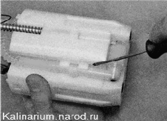
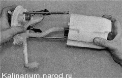
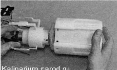

Сетчатый фильтр топливного модуля - очисткаОдной из причин низкого давления топлива в топливной рампе может быть загрязненный сетчатый фильтр топливного модуля. Снятие 1. Снимаем топливный модуль 2. Снимаем датчик указателя уровня топлива с заборной камеры. 3. Поддев отверткой, отсоединяем сливную трубку от заборной камеры. Предупреждение! Маркером отметьте направляющую, на которую надета пружина. Переставлять пружину на другую направляющую нельзя. 4. Выводим направляющие крышки из заборной камеры топливного модуля. 
5. Освобождаем три фиксатора и вынимаем из заборной камеры корпус топливного насоса в сборе с сетчатым фильтром. 7. Удаляем отложения грязи из заборной камеры топливного модуля и промываем в чистом бензине. 8. Промываем сетчатый фильтр в растворителе для нитрокраски и продуваем сжатым воздухом (от компрессора или ножного насоса). Если сетчатый фильтр сильно загрязнен и очистить его не удается, замените его . Установка Собираем топливный модуль в последовательности, обратной разборке. |